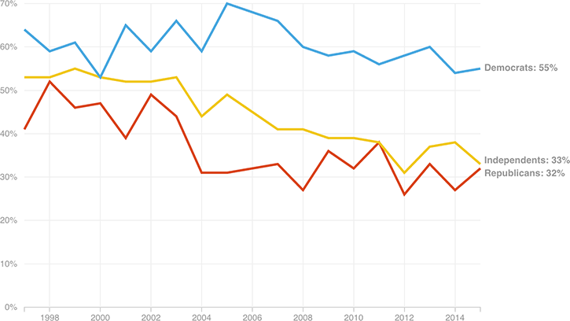

Trust In Media Has Slipped, Particularly For Republicans And Independents
In the late 1990s, nearly half of Republicans, half of independents, and nearly two-thirds of Democrats reported having a “great deal” or a “fair amount” of trust in the mass media. As of 2015, only around one-third of Republicans and independents had that kind of trust, compared to more than half of Democrats.
